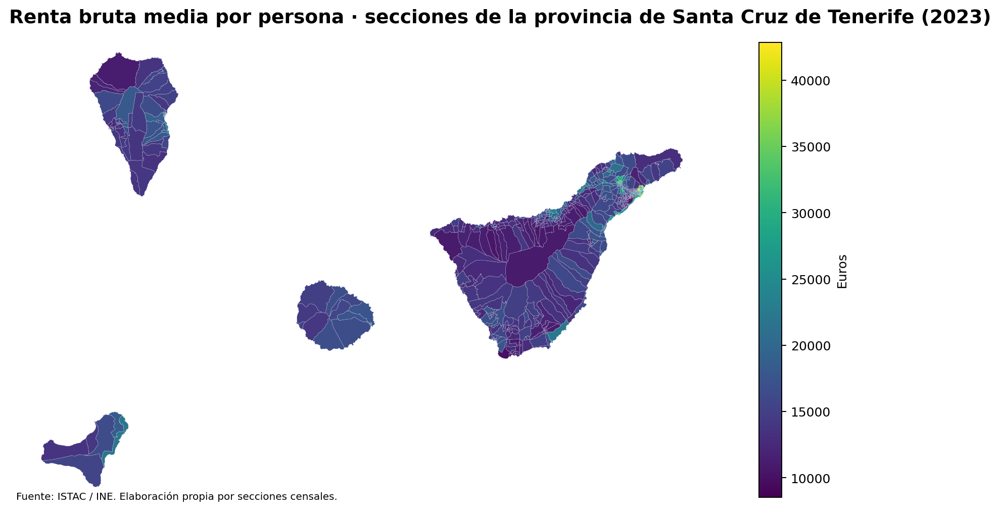
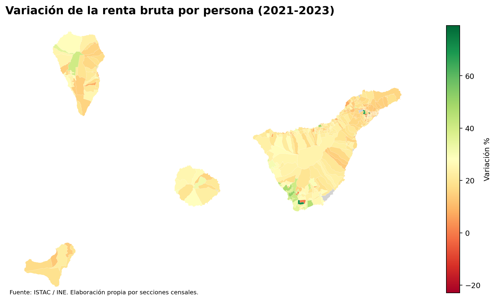
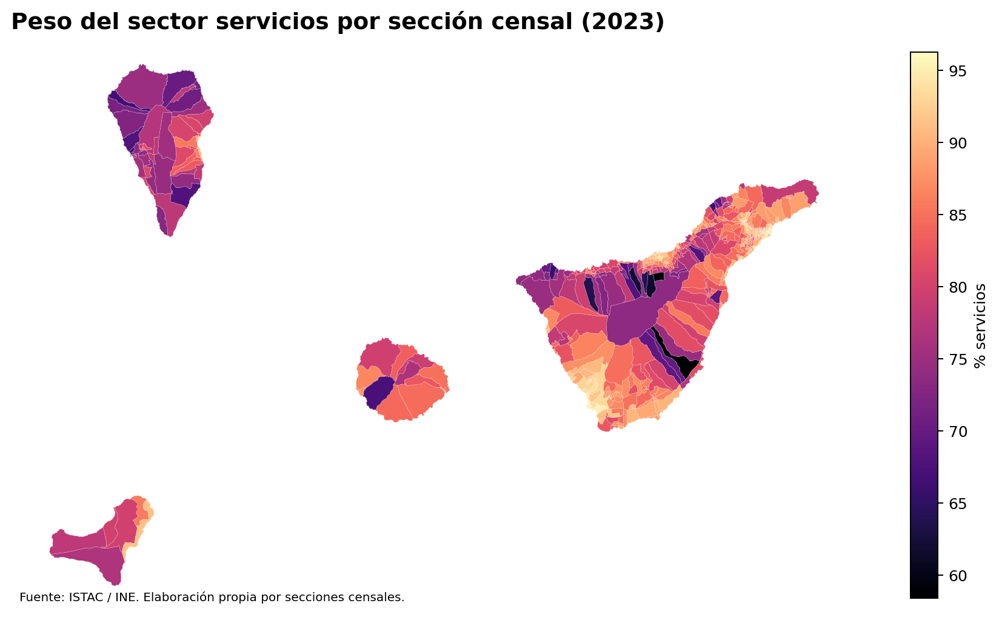
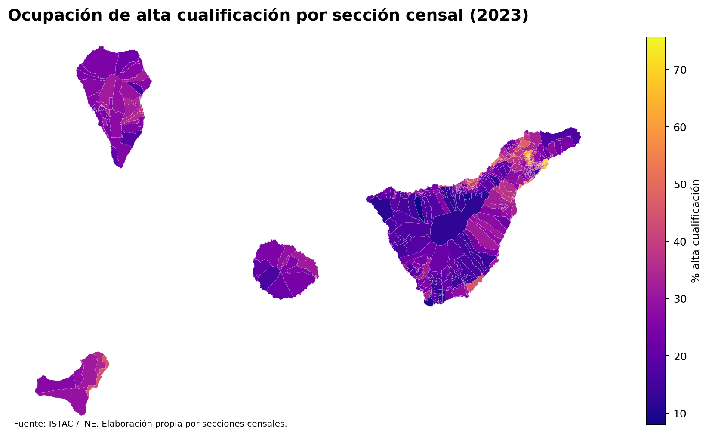
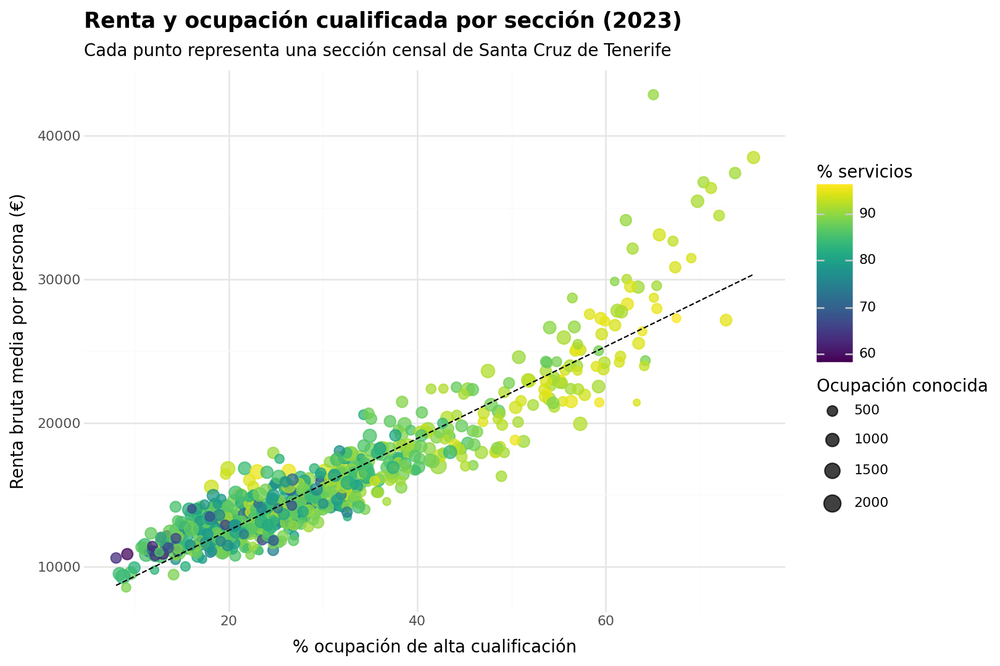
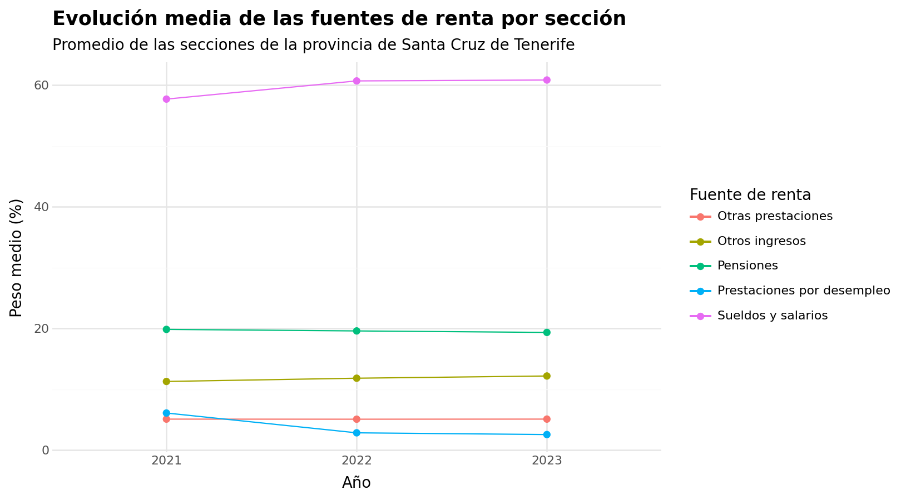
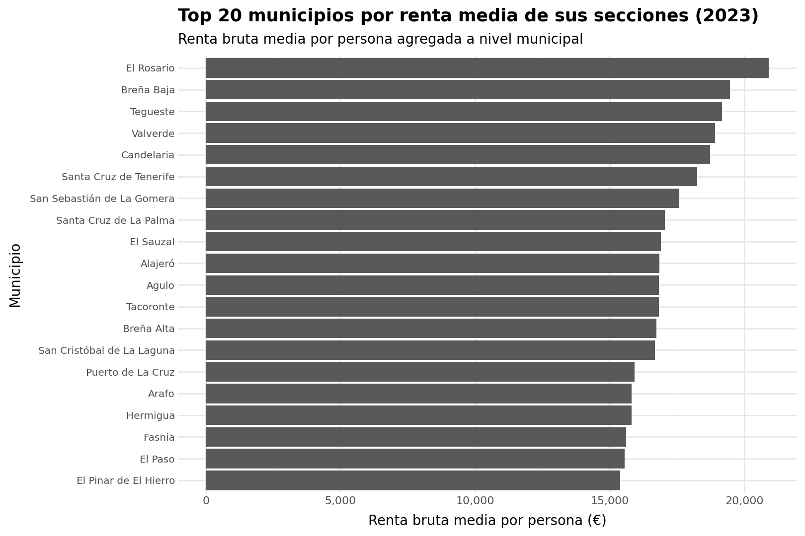

Este resultado forma parte de un pipeline DataOps construido con Dagster. La historia analiza cómo se distribuyen la renta, las fuentes de ingresos, la ocupación y la actividad económica en las secciones censales de la provincia de Santa Cruz de Tenerife entre 2021 y 2023.
Renta media 2023
16,036 €Peso medio servicios 2023
85.6 %Alta cualificación media 2023
31.0 %Tipo de visualización: mapa

Tipo de visualización: mapa

Tipo de visualización: mapa

Tipo de visualización: mapa

Tipo de visualización: dispersión

Tipo de visualización: líneas

Tipo de visualización: barras
